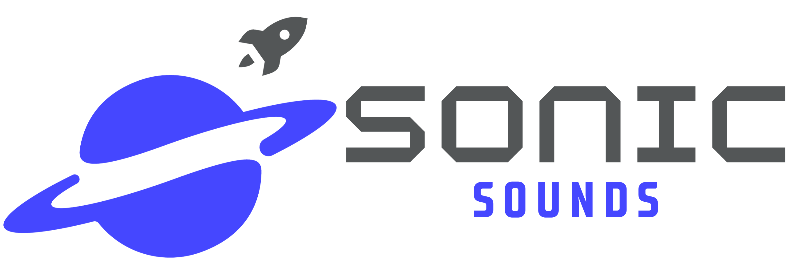
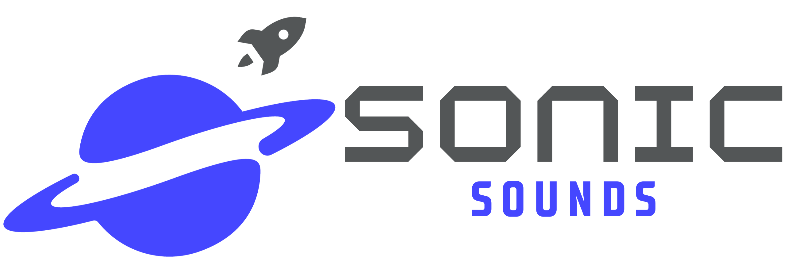

Radio telescopes function similarly to optical telescopes but gather weak radio light waves instead of collecting visible light. These telescopes focus, amplify, and make this radio light available for analysis, allowing us to study natural radio emissions from celestial objects like stars, galaxies, and black holes. They can also transmit and bounce radio waves off planets within our solar system.
These specialized instruments observe the longest wavelengths of light, ranging from 1 millimeter to over 10 meters, much longer than visible light waves, which are only a few hundred nanometers long. Usually, radio light is described in terms of frequency rather than wavelength.
Sound cannot travel through space, so we rely on light waves to determine distance. Sonification illustrates the light waves in a visual and auditory experience. Sonifications give a new experience to the visually impaired and auditory learners. NASA’s Hubble Telescope has been used to create sonification using the brightness and position for pitch and volume and represented as musical notes.
In the same way, NASA uses Hubble, Team Sonic Sounds began the data collection with the PARI radio telescope process of sun waves and the reflected light waves of the moon to demonstrate similarities in wave patterns. Just as “NASA's Wide-field Infrared Survey Explorer imaged the entire sky with multiple, independent exposures during its full cryogenic survey”, Team Sonic Sounds accessed PARI’s 12.2-meter radio telescope to collect radio waves from both the sun and the moon within 15 minutes of each other throughout the Saturday to compare the sound waves directly from the sun and the reflected sun waves from the moon. The primary focus feed is 1.42 GHz (PARI) +/- 200 MHz.
The light waves coming from the sun would be stronger and more varied than the “echo” from the moon. Team Sonic Sounds observed that the data was much more consistent in the sun than in the moon, even before the sonification process. The team will observe the data over the period of the full moon cycle and anticipate a demonstration of starting with a new moon with a value of 0 or the note middle C. As the moon approaches full, the value would be 8, representing High C or one octave. The sun will go much more slowly; the team anticipates relatively constant values as received on October 7, 2023.
Team Sonic Sounds took the wave data as CSV (comma-separated values) in frequency and intensity and used the software TwoTone to convert the wave data into musical note sounds. To demonstrate the wave data, TwoTone has various options, including instruments, octaves, and solitary notes versus arpeggios. Once the wave data was converted, the sound files were exported to an mp3 file. The mp3 files were downloaded to VSDC on Windows to combine the files into one piece of music.
Setting data to sound provides another way to analyze data. For instance, satellites, health monitors, etc, collect data constantly, and sound is a way to alert changes or anomalies so that focus can remain on important information. The same can be said for data from space; using sound can help scientists know where to look for interesting information and let the machines do the work for the rest of the time.
 
